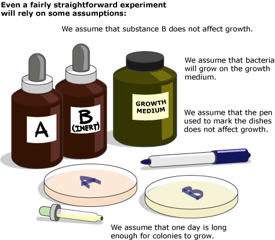
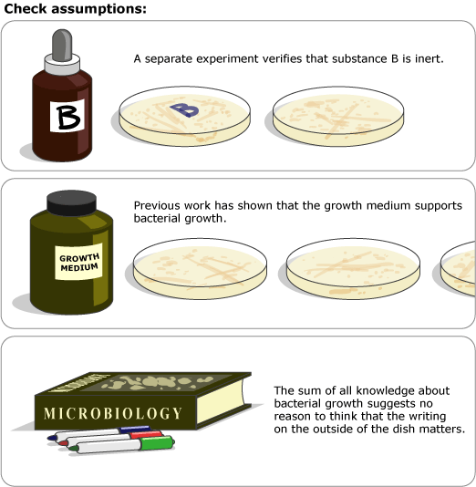

Much as we might like to avoid it, all scientific tests involve making assumptions — many of them justified. For example, imagine a very simple test of the hypothesis that substance A stops bacterial growth. Some Petri dishes are spread with a mixture of substance A and bacterial growth medium, and others are spread with a mixture of inert substance B and bacterial growth medium. Bacteria are spread on all the Petri dishes, and one day later, the plates are examined to see which fostered the growth of bacterial colonies and which did not. This test is straightforward, but still relies on many assumptions: we assume that the bacteria can grow on the growth medium, we assume that substance B does not affect bacterial growth, we assume that one day is long enough for colonies to grow, and we assume that the color pen we use to mark the outside of the dishes is not influencing bacterial growth.
Technically, these are all assumptions, but they are perfectly reasonable ones that can be tested. The scientist performing the experiment described above would justify many of her assumptions by performing additional tests in parallel with the experimental ones. For example, she would separately test whether substance B affects bacterial growth to check that it was indeed inert as she'd assumed. Other assumptions are justified by past tests performed by other scientists. For instance, the question of whether or not bacteria can grow on the growth medium would have been studied by many previous researchers. And some assumptions might remain untested simply because all of our knowledge about the field suggests that the assumption is a safe one (e.g., we know of no reason why bacteria should multiply faster when their dishes are marked with a red, rather than a green, pen). All tests involve assumptions, but most of these are assumptions that can and have been verified separately.
Nevertheless, when evaluating an idea in light of test results, it's important to keep in mind the test's assumptions and how well-supported they are. If an expectation generated by an idea is not borne out in a test, it might be because the idea is wrong and should be rejected, or it might be that the idea is right, but an assumption of the test has been violated. And if the test results end up lending support to the idea, it might be because the idea is correct and should be accepted, or it might be because a violated assumption has produced a false positive result.